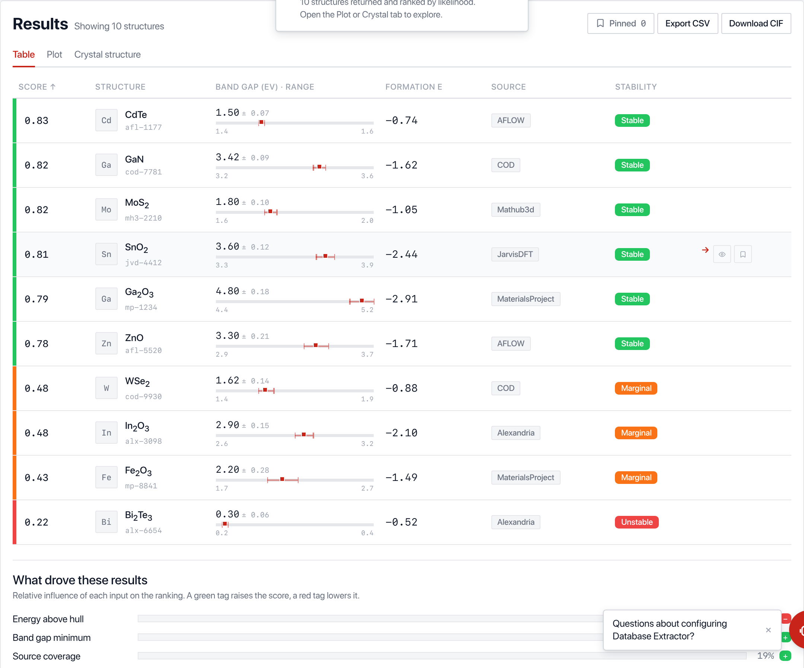
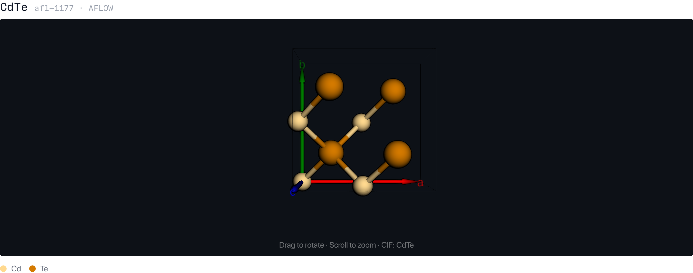

Select units, run a feature, read the results
Pick databases, generators and predictors from one sidebar, open a feature, and run it. Results come back as a ranked table of candidates with band gaps, formation energies and stability verdicts, not raw JSON.
- Query six materials databases together in a single pass.
- Compare predictors for a stability consensus verdict.
- Pin the candidates worth keeping.

Compose a custom pipeline visually
Drag databases, generators and predictors straight from the sidebar onto a canvas and wire them together. Matching port colours connect; press Run to execute the whole graph. No code, no config files, and you can save, load or export any pipeline as JSON.

Real structures, rendered from real CIF
Every candidate carries its own crystal structure, drawn from CIF with the same 3D engine the production platform uses. Rotate and zoom the unit cell, with atoms coloured by element, so what you screen is a real material, not a stand-in.
